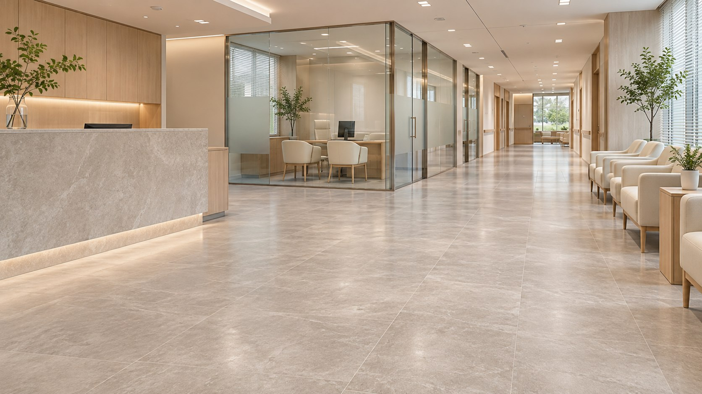

일상 관리와 분리
정기청소와 별도로 작업할 공간과 범위를 정합니다.
정기적으로 청소하더라도 병원 전체 바닥과 유리면, 오래 사용한 공용공간에는 시간이 지나면서 누적되는 오염이 생길 수 있습니다. 병원 대청소는 평소 방문 청소와 다른 작업범위·인력·일정을 정해 집중 관리하는 서비스입니다. 원내케어는 병원 운영에 지장을 주지 않도록 대상 구역과 작업 방법을 사전에 협의합니다.
공간 상태를 확인하고, 작업계획을 세우고, 별도 일정으로 진행합니다.

정기청소와 별도로 작업할 공간과 범위를 정합니다.
상·하반기 대청소를 검토할 수 있으나 실제 횟수와 계약 포함 여부는 개별 협의합니다.
바닥재, 가구, 유리면, 접근 높이와 작업 안전을 확인한 뒤 가능한 항목을 결정합니다.
대청소는 무조건 많은 약품이나 강한 장비를 사용하는 작업을 뜻하지 않습니다. 시설의 재질과 손상 위험에 따라 적합한 방법을 선택하고, 필요하지 않은 작업은 제외하는 것이 중요합니다.
일상 청소로 지우기 어려운 바닥 오염, 가장자리와 동선 집중 구역의 상태를 확인합니다. 바닥재에 적합한 세척 방법과 장비 사용 가능 여부를 검토하고, 작업 후 건조·재개방 시간을 협의합니다.
출입문 유리, 내부 칸막이, 접근 가능한 유리면 등 일상 관리 외에 점검이 필요한 부분을 확인합니다. 유리 주변의 프레임·실리콘·인접 마감재와 건물 이용 상황을 고려해 작업 범위를 정합니다.
대기 소파, 일반 수납장, 데스크 뒤쪽과 하부 등 대청소 일정에 함께 점검할 구역을 정합니다. 가구 이동 여부와 손상 위험을 고려하고, 고정 가구·고가 장비는 무리하게 움직이지 않습니다.
천장 가까운 장식물, 높은 선반의 외부 표면, 조명 주변 등은 안전하게 접근 가능한 범위인지 먼저 확인해야 합니다. 접근이 어렵거나 설비 해체가 필요한 구역은 기본 대청소 대상이 아닙니다.
넓은 면적에 대한 대청소를 계획할 때 화장실과 공용부에서 반복적으로 발생하는 물때·오염을 별도 대상에 포함할지 함께 검토할 수 있습니다. 실제 약제·도구는 표면 재질과 병원 내부 기준을 확인한 뒤 결정합니다.
원내케어의 기존 서비스 안내에는 상·하반기 연 2회 대청소를 별도로 협의하는 운영 방향이 제시되어 있습니다. 하지만 실제 실시 횟수와 계약 포함 여부는 병원별 계약 조건에 따라 다를 수 있습니다.
| 검토 시점 | 계획할 내용 | 주의사항 |
|---|---|---|
| 상반기 대청소(예시) | 현재 바닥·유리·공용부 상태 확인 → 필요 작업 선정 → 휴진/비진료 일정 협의 | 반드시 모든 병원에서 상반기에 수행한다는 의미 아님 |
| 하반기 대청소(예시) | 누적 오염 재점검 → 앞선 작업의 유지상태 확인 → 필요한 항목만 재협의 | 일부 항목은 1회만 수행하거나 제외 가능 |
중요: 연 2회는 상담 시 검토할 수 있는 계획 예시이자 기존 서비스 설명의 운영 방향이며, 정기청소 계약에 2회 무료 대청소가 자동 제공된다는 뜻이 아닙니다. 연간 계약의 포함 범위·별도 견적·실시 시점은 문서로 확인해야 합니다.
대청소는 정기청소보다 한 번에 작업할 범위가 넓기 때문에 사전 조율이 필요합니다.
STEP 01 · 상담 및 현장 확인 병원 면적과 대상 구역, 재질, 오염 상태 및 희망 일정을 확인합니다.
STEP 02 · 작업 계획·별도 견적 정기청소와 구분되는 작업항목, 인력·장비 투입 가능성, 안전 조건과 비용을 정합니다.
STEP 03 · 준비·시설 보호 병원 담당자와 출입 구역, 장비 접근 금지선, 필요 시 가구 이동 범위를 확인합니다.
STEP 04 · 협의한 대청소 진행 실제 작업 가능한 항목에 한해 정해진 순서와 시간대로 진행합니다. 자재 손상 위험이 확인되면 방법을 다시 협의합니다.
STEP 05 · 마무리 점검 청소 범위의 누락, 주변 정돈 상태, 건조·출입 가능 상태를 확인하고 후속 요청 사항을 정리합니다.
정기청소 계약에 대청소가 자동 포함되는 것은 아닙니다. 별도 시행 여부, 연간 실시 횟수, 범위와 비용은 계약 및 견적 조건에 따라 확인해야 합니다.
작업 내용에 따라 소음, 바닥 건조, 출입 제한이 필요할 수 있습니다. 진료 일정과 작업 안전을 고려하여 적절한 시간을 협의합니다. 모든 작업을 진료 중에 할 수 있다고 보장하지 않습니다.
자동 포함되지 않습니다. 바닥 재질과 기존 코팅 상태, 외창 접근 높이, 작업 자격 및 안전관리 필요성 등을 확인하여 가능한 경우에 한해 별도 협의합니다.
병원 면적 외에도 선택한 작업 항목, 오염 상태, 장비·인력 투입, 건조·출입 통제 조건이 영향을 줍니다. 현장을 확인한 뒤 견적 기준에 따라 상담합니다.
대상 구역과 희망 시기, 기존 정기청소 계약의 포함 범위를 알려주시면 별도 작업계획과 견적 상담을 안내하겠습니다.